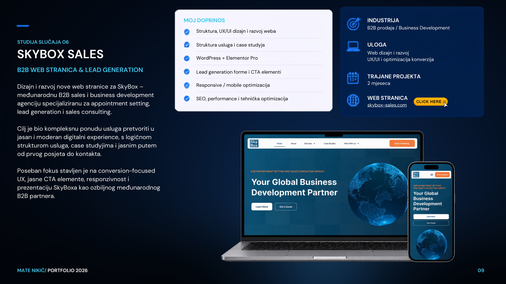

Studija slučaja / 06 · B2B · Business development
Skybox Sales
B2B web stranica i lead generation
IndustrijaB2B / Sales
Moja ulogaB2B website · Lead generation
Trajanje2 mjeseca
UslugeWeb development · Marketing & kampanje · SEO & analitika
Vrijednost projektaCijena na upit · placeholder
Napomena: financijski iznosi nisu objavljeni; prikaz cijene je placeholder za buduću doradu.

Prikaz projekta / vizualna prezentacija
01 / KONTEKST
S čim je projekt krenuo?
Dizajn i razvoj nove web stranice za međunarodnu B2B sales i business development agenciju. Fokus je bio na jasnoj strukturi usluga, studijama slučaja i konverzijskom korisničkom putu.
02 / CILJ I PRISTUP
Što je klijentu bilo važno?
Jasno predstaviti B2B usluge i pojednostaviti put posjetitelja do upita.
03 / MOJ DOPRINOS
Što sam konkretno napravio?
- Struktura, UX/UI dizajn i razvoj weba
- Struktura usluga i case studyja
- WordPress + Elementor Pro
- Lead generation forme i CTA elementi
- Responsive / mobile optimizacija
- SEO, performance i tehnička optimizacija
04 / RJEŠENJE
Kako sam pristupio rješenju?
Projekt obuhvaća sljedeće komponente: Struktura, UX/UI dizajn i razvoj weba, Struktura usluga i case studyja, WordPress + Elementor Pro, Lead generation forme i CTA elementi.
05 / REZULTATI
Što je projekt donio?
Projekt pokazuje pristup i isporučene funkcionalnosti. Konkretne brojke dodat ću kada budu potvrđene.